Торрент-клиент лучше пускать в интернет напрямую, а весь остальной трафик оставить в VPN. Так раздачи качаются на полной скорости и не нагружают VPN-сервер. Ниже пошагово для Happ и INCY на компьютере и Android.
На iPhone и iPad так сделать нельзя: ни Happ, ни INCY не умеют выбирать приложения на iOS. Подробнее в конце статьи.
На Windows запускайте Happ от имени администратора: правой кнопкой по ярлыку → «Запуск от имени администратора». Без этого режим TUN не заработает.
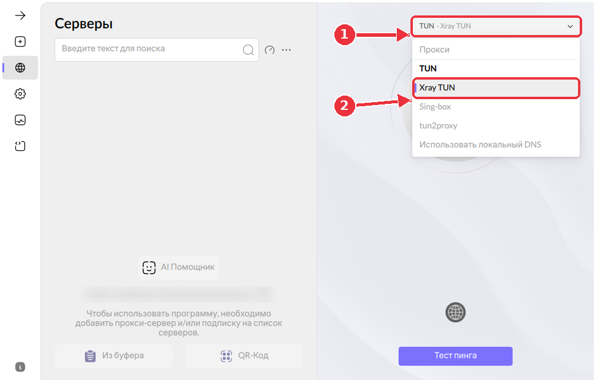
1. На главном экране откройте список режимов вверху справа.
2. Выберите TUN → Xray TUN. В режиме «Прокси» исключение приложений не нужно и не работает: торрент-клиенты системный прокси обычно игнорируют.
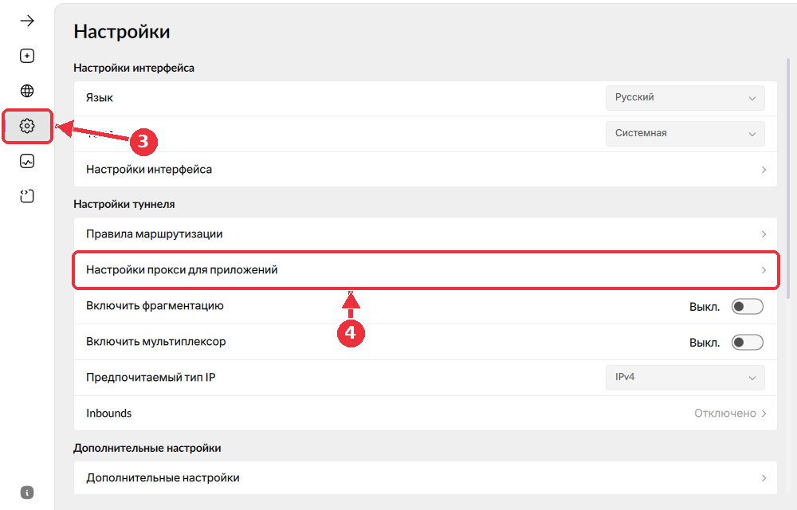
3. Нажмите шестерёнку слева — откроются Настройки.
4. В блоке «Настройки туннеля» выберите Настройки прокси для приложений.
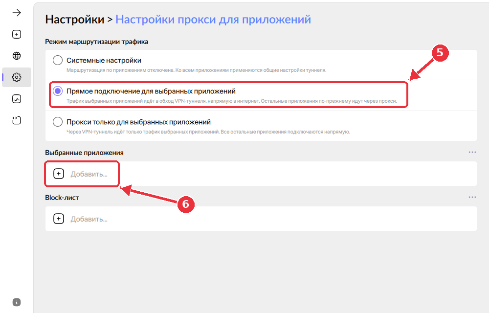
5. Отметьте Прямое подключение для выбранных приложений. Не путайте с «Прокси только для выбранных приложений» — это обратный режим.
6. В блоке «Выбранные приложения» нажмите Добавить…
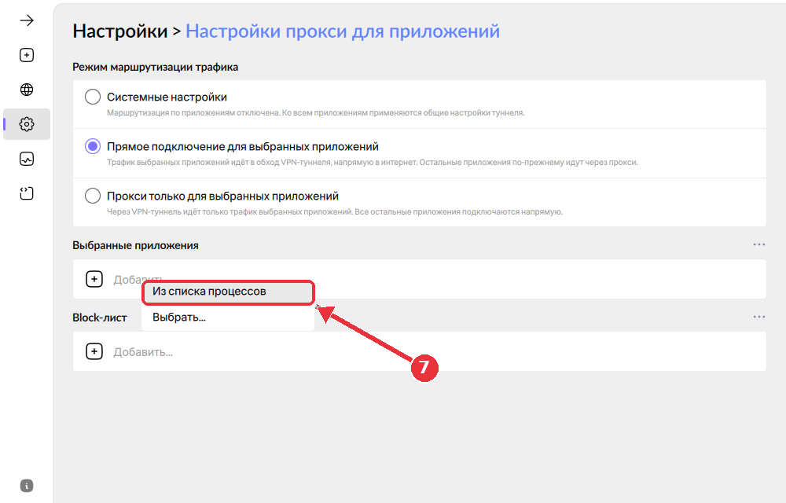
7. Если торрент-клиент запущен, выберите Из списка процессов. Если нет — Выбрать… и укажите сам файл программы, а не ярлык: на Windows обычно C:\Program Files\qBittorrent\qbittorrent.exe, на Mac — qBittorrent.app или Transmission.app в «Программах».
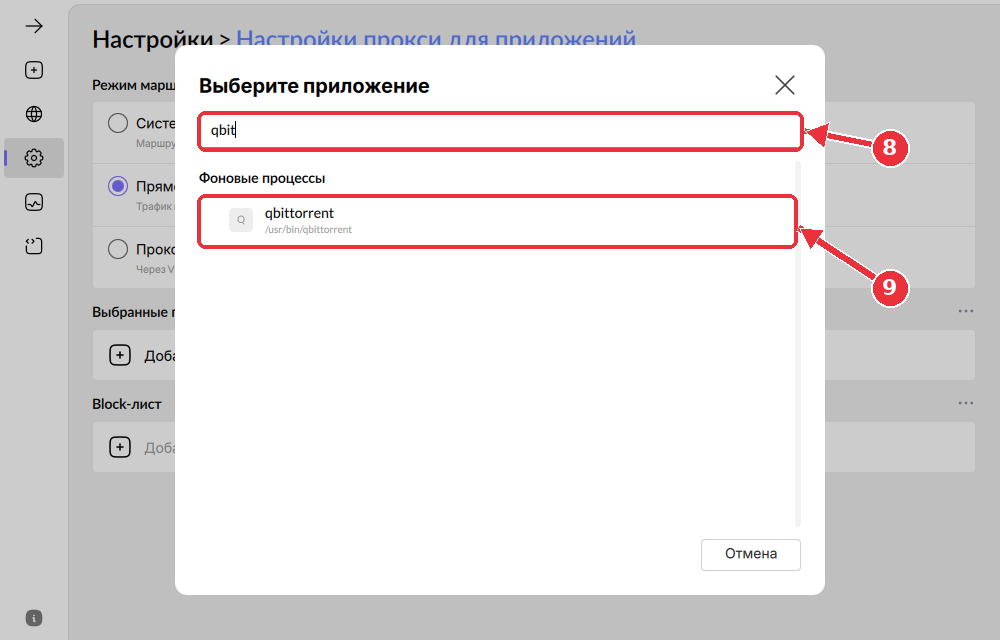
8. Начните вводить название клиента в поиске, например qbit.
9. Нажмите на найденный процесс.
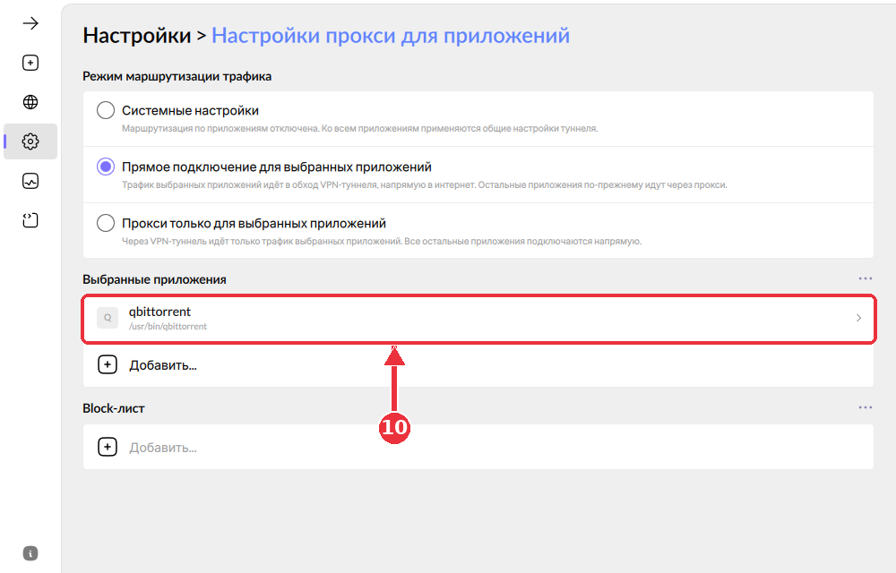
10. Клиент появился в списке «Выбранные приложения». Теперь отключите и снова подключите VPN и перезапустите торрент-клиент.
Скриншоты сделаны в Happ 4.8.3 для Linux. На Windows и macOS экраны те же, отличается только путь к программе. На Mac нужна версия Happ с сайта (DMG): в версии из App Store выбора приложений нет.
Нужна версия INCY не ниже 3.6.0: в 3.3.3–3.5.0 выбор приложений на компьютере работал с ошибкой. На Windows запускайте INCY от имени администратора.
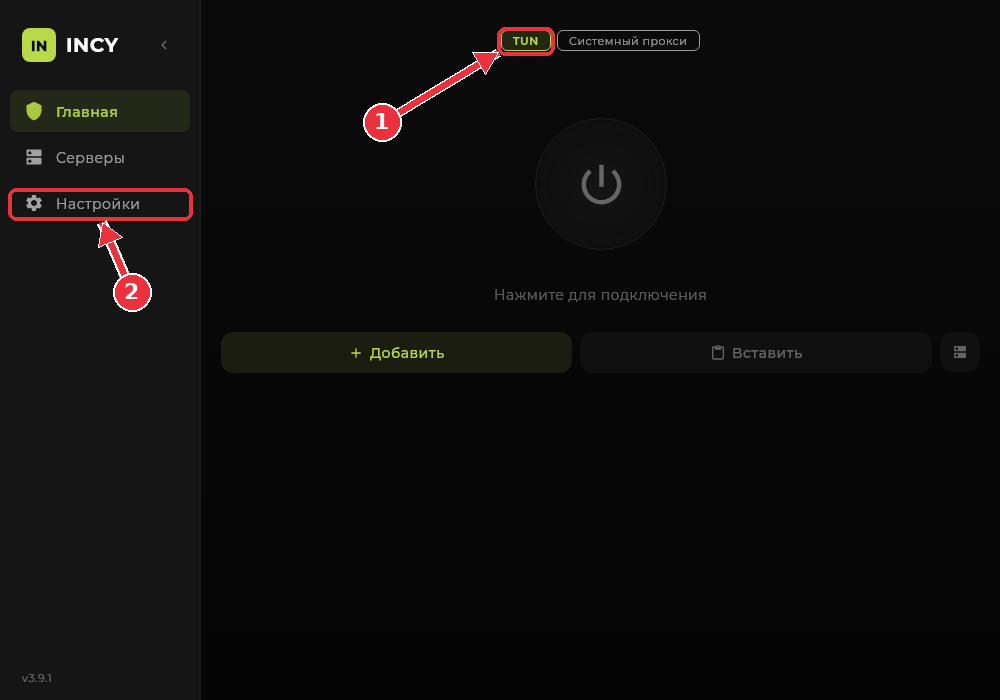
1. На главном экране вверху выберите режим TUN.
2. Откройте Настройки в меню слева.
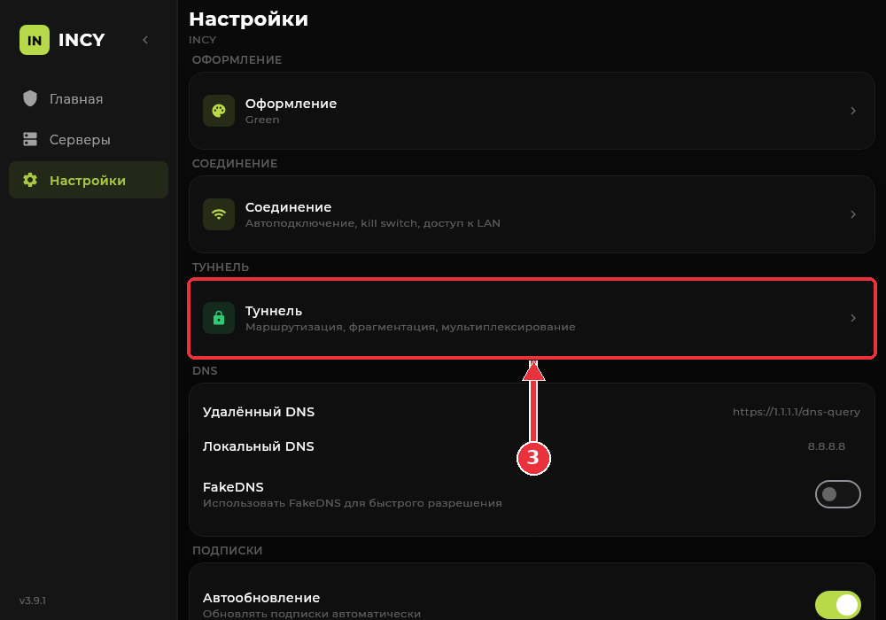
3. Откройте раздел Туннель.
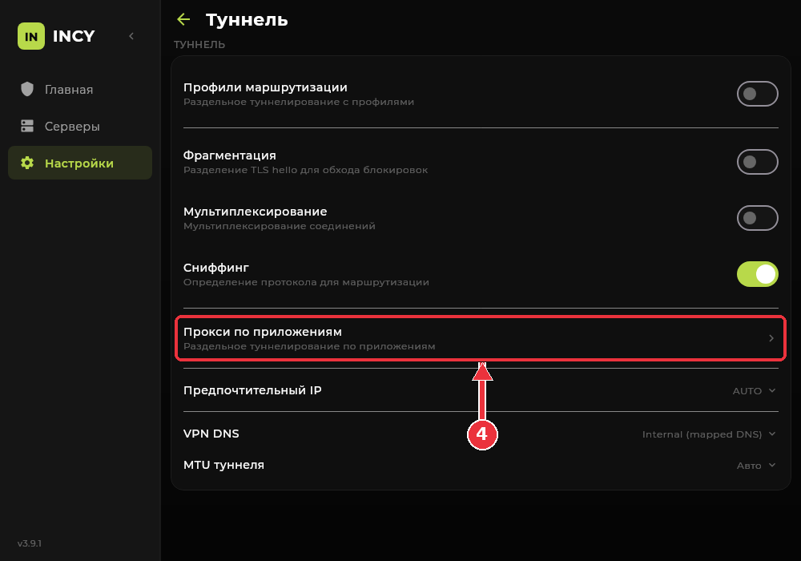
4. Нажмите Прокси по приложениям.
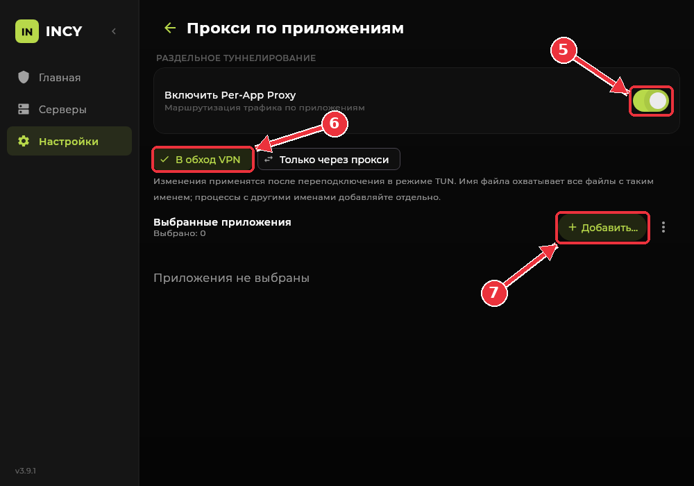
5. Включите переключатель Включить Per-App Proxy.
6. Выберите режим В обход VPN. «Только через прокси» — обратный режим, он не нужен.
7. Нажмите Добавить…
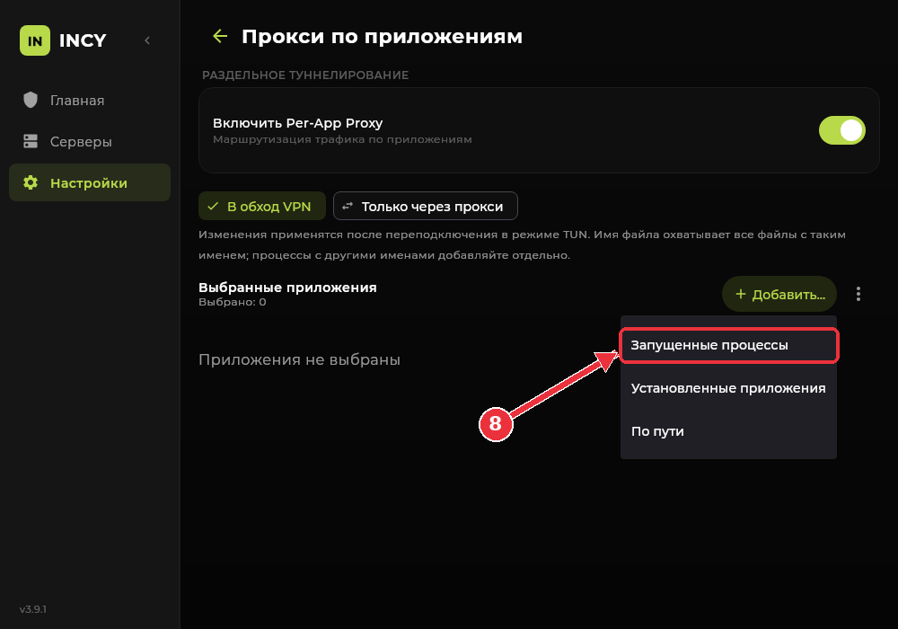
8. Если торрент-клиент запущен, выберите Запущенные процессы. Можно также найти его в «Установленных приложениях» или указать файл через «По пути».
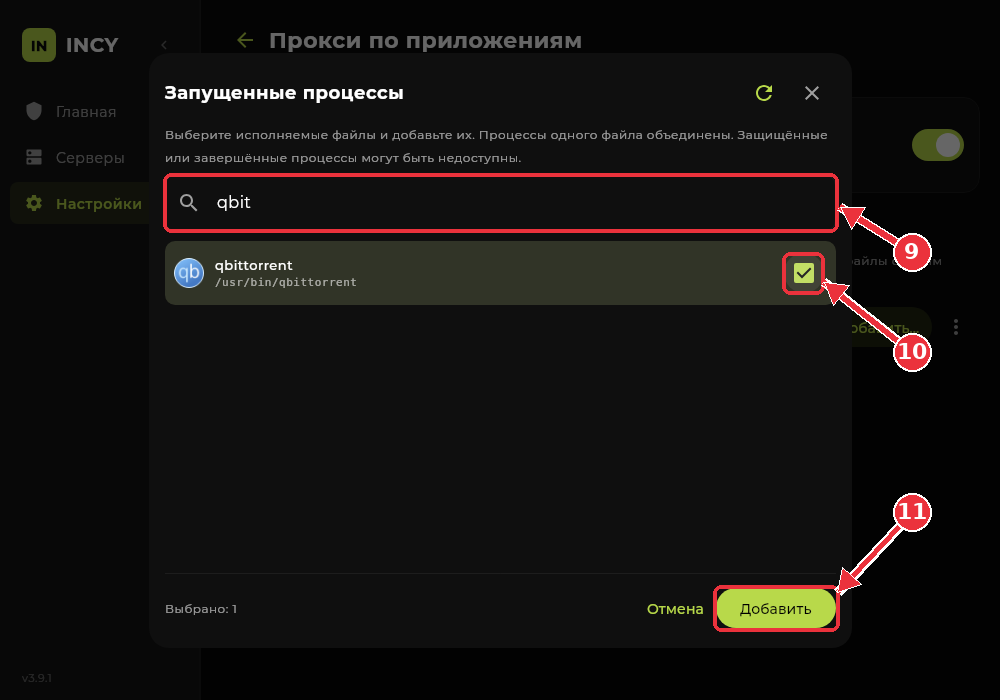
9. Введите в поиске название клиента, например qbit.
10. Поставьте галочку напротив него.
11. Нажмите Добавить.
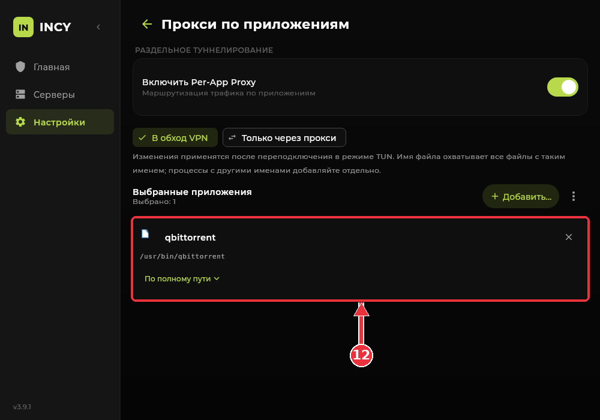
12. Клиент появился в списке. Изменения вступают в силу после переподключения в режиме TUN — отключите и снова подключите VPN, затем перезапустите торрент-клиент.
Если с сервером «AUTO» исключение не срабатывает, выберите конкретный сервер. Скриншоты сделаны в INCY 3.9.1 для Linux.
На Android исключённое приложение вообще не попадает в туннель, поэтому правила маршрутизации на него не влияют.
На iOS выбирать приложения нельзя ни в Happ, ни в INCY. Что можно сделать:
Исключить торрент через «Маршрутизацию» не получится: правила по сайтам и IP покроют разве что трекер, а обмен с другими участниками раздачи всё равно пойдёт через VPN.